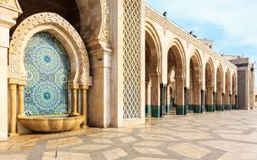
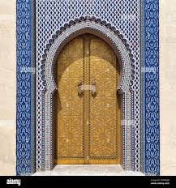
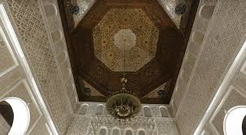
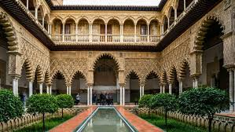
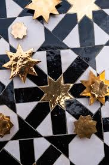
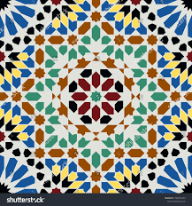
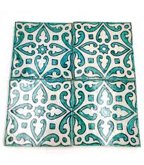
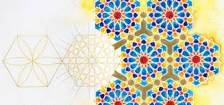
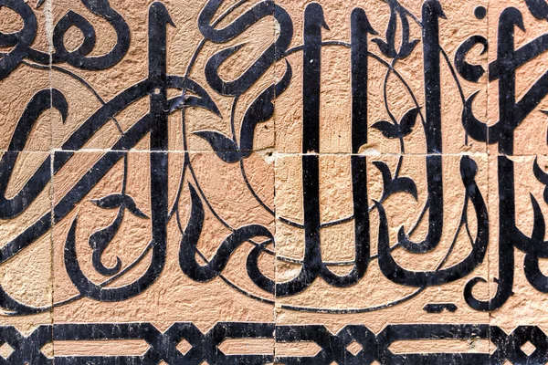

Architecture Islamique & Art du Zellige
Explorez la magnificence de l'architecture islamique marocaine et la perfection géométrique du zellige, un art millénaire qui transforme la terre cuite en véritables tapis de pierre.

L'architecture islamique au Maroc est une symphonie de formes géométriques, de motifs végétaux et de calligraphies sacrées. Cet art, né au VIIe siècle, a atteint son apogée avec les dynasties almohade et mérinide, laissant des joyaux comme la Koutoubia de Marrakech ou la médersa Ben Youssef.
Le zellige, cet art typiquement marocain de la mosaïque en terre cuite émaillée, représente l'expression la plus aboutie de cette recherche de perfection géométrique et de dialogue avec l'infini, principe fondamental de l'art islamique.
Éléments Clés de l'Architecture Islamique

Les Arcs
Arcs outrepassés, polylobés et en fer à cheval, caractéristiques de l'architecture hispano-mauresque, alliant grâce et solidité.

Coupoles à Mouqarnas
Voûtes en nids d'abeille créant des jeux de lumière et une impression d'infini, prouesse technique et esthétique.

Patios et Jardins
Espaces centraux organisés autour de l'eau, symbolisant le paradis dans la tradition islamique.
L'Art du Zellige
Le zellige est une technique de mosaïque en terre cuite émaillée apparue au Maroc au Xe siècle. Chaque pièce (tesselle) est taillée manuellement selon des formes géométriques précises qui s'assemblent comme un puzzle infini, sans jamais répéter exactement le même motif.
Préparation de l'argile
Argile locale mélangée, malaxée et moulée en plaques épaisses
Cuisson
Première cuisson à 900°C pour durcir la terre cuite
Émaillage
Application d'émaux colorés à base d'oxydes métalliques
Découpe
Taille manuelle des tesselles selon des gabarits en métal
Assemblage
Composition du motif à l'envers sur un lit de sable
Découvrez le processus en vidéo
Documentaire sur la fabrication traditionnelle du zellige marocain.
Motifs Traditionnels du Zellige
Découvrez la richesse des motifs géométriques qui ornent les monuments marocains





Un Patrimoine Vivant
L'architecture islamique et l'art du zellige au Maroc ne sont pas de simples vestiges du passé, mais des traditions vivantes qui continuent d'inspirer les créateurs contemporains. Des médersas historiques aux villas modernes, ce langage visuel unique reste un marqueur fort de l'identité culturelle marocaine.
Aujourd'hui, les maâlems (maîtres artisans) perpétuent ce savoir-faire tout en l'adaptant aux exigences contemporaines, assurant la transmission de cet héritage aux générations futures.